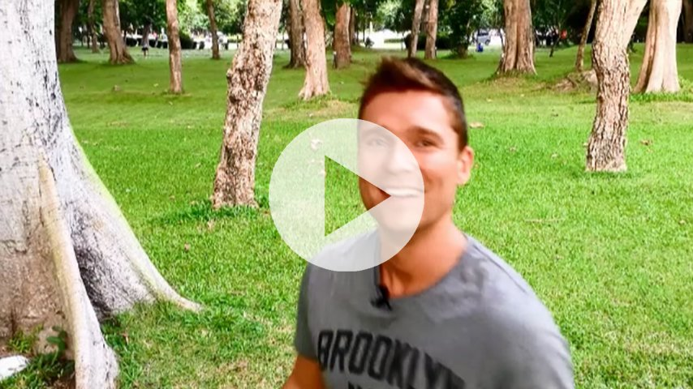

Congratulations!
What lies behind us and what lies in front of us are tiny matters to what lies within us. - Ralph Waldo Emerson
Well done for completing this course. Just by doing so, you've dipped into some key themes within the book.
As we've explored, it's not just about connecting to the external world. It's so much more than that. It's about how you relate to your inner experiences of body and mind. This inner transformation is an ongoing process. It can only take place with practice.
Everyone can benefit from insights into the human mind, behaviour and the practice of mindfulness. My hope is that by having completed this micro course, you will have a little more freedom and flexibility in your life.